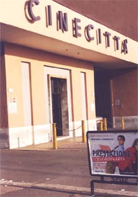

|  Photo courtesy of M. Calabro |
Il cinema piace molto ai giovani australiani. È bello andare al cinema con gli amici durante il fine settimana ma soprattutto durante le vacanze. È un modo di divertirsi e stare insieme.
|
Imagine that it is holiday time and you would like to go and see the latest film at the cinema. Telephone a friend and invite him/her to the movies.
The conversation should include:
To help you prepare for the phone call, complete the exercises in the worksheet A3.6 first.
 |
Refer to Vuoi andare al cinema? and Invitare for relevant expressions. |
| Refer to Il passato prossimo to revise how to use the past tense. |  |